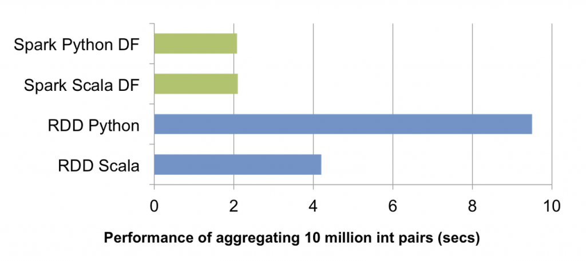

All presented frameworks are great, but ...
they are limited by performance of our machines.
We need to handle ~TBs datasets.
“Apache Spark™ is a fast and general engine for large-scale data processing.”
“Apache Spark™ is a fast and general engine for large-scale data processing.”
“Spark’s core developers have worked extensively to bridge the performance gap between JVM languages and Python. In particular, PySpark can now run on PyPy to leverage the just-in-time compiler. (Up to 50x speedup) The way Python processes communicate with the main Spark JVM programs have also been redesigned to enable worker reuse.”
Comparable with native Spark...

Enough said...
let's give it a try.